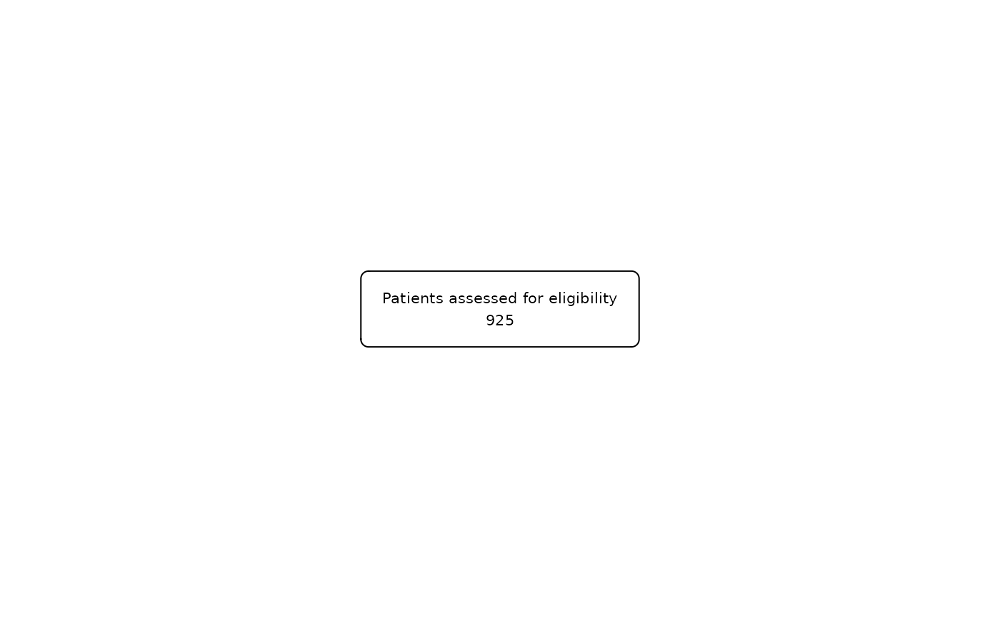

This function allows to initialize a flow chart given any database. It will create a fc object showing the number of rows of the database. If a database is not available, the user can instead directly enter the number of rows in the study.
Usage
as_fc(
.data = NULL,
N = NULL,
label = "Initial dataframe",
text_pattern = "{label}\n{N}",
just = "center",
text_color = "black",
text_fs = 8,
text_fface = 1,
text_ffamily = NA,
text_padding = 1,
bg_fill = "white",
border_color = "black",
width = NA,
height = NA,
hide = FALSE,
title = NULL,
x_title = 0.1,
text_color_title = "black",
text_fs_title = 10,
text_fface_title = 1,
text_ffamily_title = NA,
text_padding_title = 0.6,
bg_fill_title = "#B3D1FF",
border_color_title = "black",
width_title = NA,
height_title = NA
)Arguments
- .data
Data frame to be initialised as a flowchart.
- N
Number of rows of the study in case
.dataisNULL.- label
Character or expression with the text that will be shown in the box.
- text_pattern
Character or expression defining the structure that will have the text in each of the boxes. It recognizes
label,n,Nandpercwithin brackets. For default it is"{label}\n {n}". Iftext_patternorlabelis an expression, thelabelis always placed at the beginning of the pattern, followed by a line break where the structure specified bytext_patternis placed.- just
Justification for the text: left, center or right. Default is center.
- text_color
Color of the text. It is
"black"by default. See thecolparameter for gpar.- text_fs
Font size of the text. It is 8 by default. See the
fontsizeparameter for gpar.- text_fface
Font face of the text. It is 1 by default. See the
fontfaceparameter for gpar.- text_ffamily
Changes the font family of the text. Default is
NA. See thefontfamilyparameter for gpar.- text_padding
Changes the text padding inside the box. Default is 1. This number has to be greater than 0.
- bg_fill
Box background color. It is white by default. See the
fillparameter for gpar.- border_color
Box border color. It is
"black"by default. See thecolparameter for gpar.- width
Width of the box. If
NA, it automatically adjusts to the content (default). Must be an object of class unit or a number between 0 and 1.- height
Height of the box. If
NA, it automatically adjusts to the content (default). Must be an object of class unit or a number between 0 and 1.- hide
Logical value to hide the initial box or not. Default is FALSE. hide = TRUE can only be combined with
fc_split().- title
Add a title box to the initial box. Default is
NULL.- x_title
x-coordinate of the title box. Default is
0.1(placed in the left).- text_color_title
Color of the title text. It is
"black"by default.- text_fs_title
Font size of the title text. It is 8 by default.
- text_fface_title
Font face of the title text. It is 1 by default. See the
fontfaceparameter for gpar.- text_ffamily_title
Changes the font family of the title text. Default is
NA. See thefontfamilyparameter for gpar.- text_padding_title
Changes the title text padding inside the box. Default is 1. This number has to be greater than 0.
- bg_fill_title
Title box background color. It is
"white"by default.- border_color_title
Title box border color. It is
"black"by default.- width_title
Width of the title box. If
NA, it automatically adjusts to the content (default). Must be an object of class unit or a number between 0 and 1.- height_title
Height of the title box. If
NA, it automatically adjusts to the content (default). Must be an object of class unit or a number between 0 and 1.
Examples
safo |>
as_fc(label = "Patients assessed for eligibility") |>
fc_draw()
